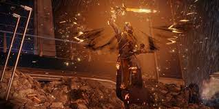

Solar is a very powerful subclass for warlocks, though not as good as void. A Warlock that uses Solar is called a Dawnblade. There is only one super you can choose, but with it you will really take flight. Daybreak — Weave Solar Light into blades and smite your foes from the skies.  This is a powerful super because solar wings will form on your back and you will fly high into the air, making it easy to shoot the fiery blasts from your sword that was crafted from the very flames of the sun.
There are two melee abilities to choose from.
Celestial Fire — Send out a spiral of three explosive Solar energy blasts.
Igniting Touch — Strike an enemy with this melee ability to burn them and cause them to explode when killed.
There are also three basic grenades to choose from.
Solar Grenade — A grenade that creates a flare of Solar Light which continuously damages enemies trapped inside.
Firebolt Grenade — A grenade that unleashes bolts of Solar Light at nearby enemies.
Fusion Grenade — An explosive grenade that deals bonus damage when it attaches to a target.
You can visit Ikora Rey at the tower to unlock more grenades.